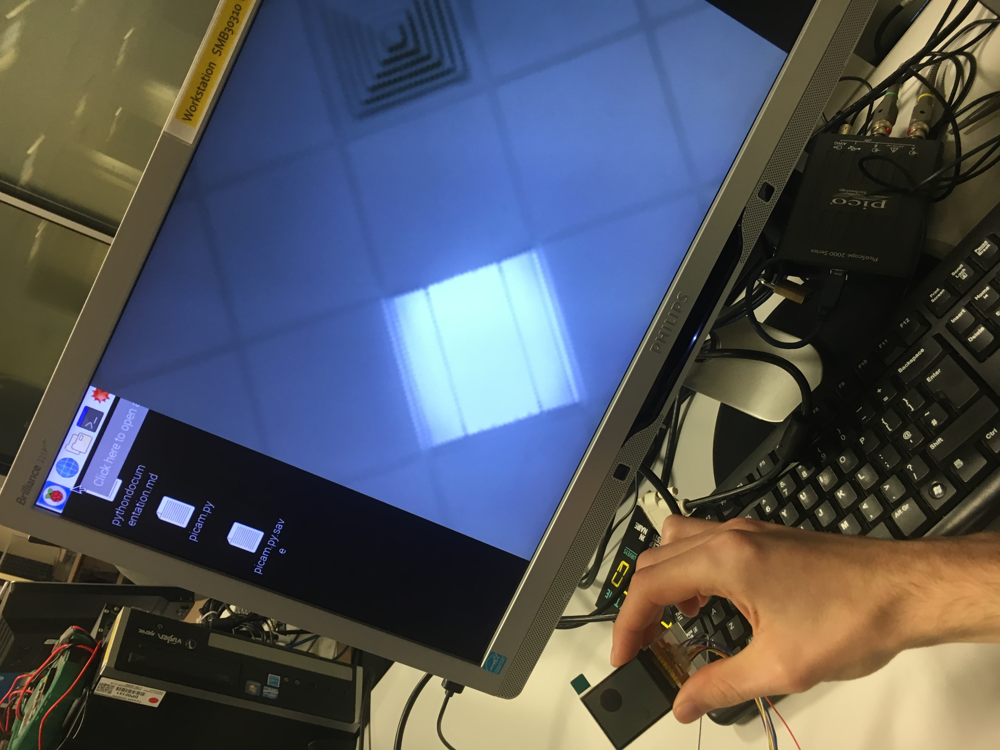
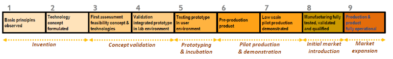

Final Year Project
![pi0toChroma logo]()
By David Joseph Hawkins
A report submitted to the University of Plymouth in partial fulfilment for the degree of BEng(Hons) Electrical and Electronic Engineering.
Stage Criteria
This is the criteria I would like to meet, to feel as though I have created a successful project.
| Stage | Name | Description |
|---|---|---|
| 1 | Smart shades | Make a set of smart sunglasses |
| 2 | Auto smart shades | Add LDR to control the opacity |
| 3 | Auto smart point shades | Add camera to make darks points over bright points |
| 4 | Controllable smart shades | Add options to swap between modes |
| 5 | Driving/safety improvements | Auto react to headlights etc. |
Inspiration
I saw this video about this case and got the idea for reactive sunglasses while I was researching to see if this had already been done I found theses.
This product starts down the path I would like to take but are binary and I would like different levels of tinting and active shading.
Plan
The products above, along with Paul Davey’s lectures last year inspired my idea.
The plan is to use two LCD’s with the backlight removed, to create dimmable panels in front of the users eyes. Then eventually I will add a camera to make point control which will block bright spots such as projectors and the sun, and dim them to reduce squinting.
Potential issues
- IO speed, depending on the solutions used i could end up running into IO speed bottle necks affect frame rate
- frame rate for the active points would need to be fairly high to stop nauseating effect.
- camera distortion, I would like to use a camera with little to no distortion this would make image processing easier.
- Field of view, having a similar FoV would be useful since a camera with smaller FoV would end up wasting the edge of the LCD.
- Aspect ratio, mismatch of aspect ratios with out use of accelerometers for predictive tracking could cause issues
Final Mock-up
![final mock-up design image]()
So, once I have removed the backlight from the LCD’s I can mount them in a frame. I can then begin to control the contrast/pixel density to make them dim. I will then add an LDR to automate the brightness selection, this will remove the manual adjust however I will leave the buttons to set the levels.
Next I will add a camera to the system so that the system can detect bright points, hence make a matching point darker on the lens. I will then use the buttons to make it so that you can swap between the different modes. The final additional feature I would like to add is some intelligence on the camera side to ignore certain circumstances such as car tail/headlights.
Report
LCD
I will be using LCD’s to reduce the amount of light reaching the users eyes.
Theory

In this diagram from Paul Davey’s lecture on LCD’s last year, you can see the inner working of an individual pixel.
This works like so;
- Light enters the panel through the rear polarizer. The light becomes vertically polarized.
- The polarized light then passes through the transparent backplane electrode.
- As the polarized light passes through the Liquid crystal fluid it gets twisted into the horizontal plane.
- The polarized light passes through the transparent pixel electrode.
- Because the light is polarized in the horizontal plane, it passes through the front horizontal polarizer.
I will be using this effect to reduce the amount of light reaching the users eyes.
Wiring
| Function | Colour | Pi pins chip side | Pi pin | Colour | Function |
|---|---|---|---|---|---|
| vcc | Orange | 17 | 18 | Grey | rs |
| sda | Yellow | 19 | 20 | Black/P | gnd |
| N/A | nc | 21 | 22 | Blue | reset |
| scl | Green | 23 | 24 | White | cs |
I connected the LCD and displayed some random size and location spots of different opacity on the screen.
FOV
![image]()
Field of view(FoV) is the area that you can can see this is normally measured in degrees. This means for simple mapping I need the FoV of the camera and LCD to be the same the other issues would be;
aspect ratio
![image]()
distortion

LCD

160x128 pixels
98.8 degrees horizontal, 86.05 degrees vertical field of view
Camera
2592x1944 pixels
53.50 degrees horizontal, 41.41 degrees vertical field of view
So, this will cause issues since the dot placed on the LCD will end up in the wrong place without scaling.
Frame
I decided to laser cut the frame since this would be more cost and time effective. Also glasses frames tend to be fairly 2-dimensional. In the following image you can see the design iterations.

Initially my idea was to heat the acrylic and bend at the red line, meaning that you wouldn’t be able to fold them.
The next idea I had was another fixed design, but with a simpler shape. I decided to go with this idea rather than the former so this was the first iteration that actually got cut. I found that the lens was going to be too close to the eye and the ribbon cable from the lens was going to dig in to the brow of your nose. This was solved in the third iteration by making the increasing distance between the top of the frame and the top of the nose support. This forced the user to wear the glasses further down their nose.
After this I designed a hinging mechanism and readded the curves to make the glasses more comfortable. I also added a mounting bracket for the camera. This was the frame I cut and used for most of the prototyping phase of the project.
For the next two designs I was contemplating adding a backing plate to the pi mount and also adding a mount for the capacitive touch sensor. This design was never cut since the pi 0 needs clearance for the solder of the pin headers. Also the backing might have added too much weight. I furthered the design of the hinge by squaring off one end to make it more ridged and adding a hole to hold it together.
Blob Detection
My initial idea for blob detection was to import the grey scale image as a matrix of values. Then to iterate over it, looking for a difference in values or checking against a threshold value. However, I struggled getting the image in as a matrix and even using an example matrix because the code wasn’t running very quickly or reliably.
I tried to install opencv to do the image processing but the install failed. After I spoke to my supervisor he confirmed my suspicion that opencv was too overpowered for my project.
So I did some more research around low power blob detection in python and found Skimage which has a function for Determinant of Hessian(DoH) blob detection. This was lightweight, meaning it should be quick enough. The only issue I had then was getting the image from the camera into the right format. Skimage has a built in numpy array converter which was fortunate since the DoH blob detection needs a numpy array to function.
With this working I passed the program an image from the camera and saved the image with a circle around the blob.

I then connected the LCD and got blob detection working with that.

Telegram
Then I started to convert the shades.py (the file that controls the LCD and camera) and telegrambot.py (the script that enables remote control via a chat client bot). This involved more work than I had initially anticipated since passing variables around wasn’t as easy as I had hoped.
I decided to use telegram to add remote control, so that you could adjust the colour of the tint remote control.
Commands
| Command | Parameters | Description |
|---|---|---|
| help | N/A | Show the help menu. |
| pickcolour | Pick from list of tints | Preset tints/colours. |
| pickmode | Pick manual,tint,points or full auto | Change current mode. |
| tint | Percentage | Sets the tint of the lenses. |
| image | N/A | Shows you the current image. |
| up | N/A | See if the bot is up. |
| temp | N/A | See the CPU temperature. |
| start | N/A | Starts shades. |
| stop | N/A | Stop shades. |
| exit | Admin only | Exit shades. |
| reboot | Admin only | Reboot shades. |
| halt | Admin only | Shutdown shades. |
| uprecords | N/A | See up time. |
| debug | N/A | Toggles debug. |
| buttons | Admin only | Toggles buttons. |
| colourset | fore/back@0/255,0/255,0/255 | Sets the colour of the lenses. |
| allowallids | Admin only | Toggles if admin ID is needed. |
Capacitive Touch Sensor
After I had all of the system working I bought a 5 button capacitive touch sensor. I then started adding that into the code, so that I would be able to control the glasses without having to have it connected to the internet.
Wiring
| Function | Colour | Pi pins chip side | Pi pin | Colour | Function |
|---|---|---|---|---|---|
| 3.3v | nc | 1 | 2 | nc | 5v |
| Button 1 | Orange | 3 | 4 | Red | 5v |
| Button 2 | Yellow | 5 | 6 | Black | gnd |
| Button 3 | Green | 7 | 8 | Blues | Button 4 |
| gnd | nc | 9 | 10 | Purple | Button 5 |
Buttons
| Button | Colour | Pressed | Held |
|---|---|---|---|
| 1 | Orange | Scroll tints | Reset tint to clear |
| 2 | Yellow | Scroll modes | Reset to manual |
| 3 | Green | Debug | Turn off |
| 4 | Blue | Stop | Start |
| 5 | Purple | N/A | Exit |
For the final design I only used three buttons since the frame was beginning to get a bit cluttered with wires and boards.
![buttonlocations]()
I also decided that I would keep all the buttons on one side of the frame, since the capacitive touch sensitivity is a bit to high and I cant change it on this board. This means I’m less likely to have accidental readings from touching the wire.
Capacitive Touch Control
Mode change
Tint change
Debug toggle
Criteria Met
- Make a set of smart sunglasses.
- Add automatic of control the opacity.
- Add camera to make dark points over bright points.
- Add options to swap between modes.
- Auto react to headlight/safety improvements.
I met all of my stage criteria, except the reacting to headlights. Which I decided wasn’t a good idea, since this could interfere with the drivers sight, so I will leave that mode out. I added other safety features like resetting when you hold the mode button. Except for a catastrophic error, the system is fail safe not deadly meaning it clears the LCD before exiting.
I believe my project has meet at least technology readiness level 4, even pushing some level 5 criteria as defined by the European Commission.
| Level | Definition |
|---|---|
| TRL 1. | Basic principles observed. |
| TRL 2. | Technology concept formulated. |
| TRL 3. | Experimental proof of concept. |
| TRL 4. | Technology validated in lab. |
| TRL 5. | Technology validated in relevant environment (industrially relevant environment in the case of key enabling technologies). |
| TRL 6. | Technology demonstrated in relevant environment (industrially relevant environment in the case of key enabling technologies). |
| TRL 7. | System prototype demonstration in operational environment. |
| TRL 8. | System complete and qualified. |
| TRL 9. | Actual system proven in operational environment (competitive manufacturing in the case of key enabling technologies; or in space). |
The European Association of Research and Technology Organisations (EARTO) has a slightly more relevant scale of TRL.

I still believe I’m level 4, with aspects of level 5 according to this scale.
Future Development
My setup is mostly a proof of concept. For a full prototype/production model, I would use a chip with high IO rates like a DSLR image processing chip, with a low quality and high frame rate camera with a bare LCD.
Because of the image processing chip I would be able to increase the communication speed, since the IO is the limiting factor on the current setup.
The biggest IO limit at the moment is the LCD, this is because the only reasonably priced LCD at this size that I could find use an SPI communication link. Also the LCD driver chip is fairly slow using this link.
The other main issue is the fact this system assumes your eyes are always directly behind the LCD. So, for a fully fledged system I would need to add some form of simple eye tracking to compensate for this.
While talking to other students on the course about my project, one individual mentioned research which could add dynamic prescription. I thought this would be a good addition to my project as the glasses would be truly dynamic.
<> By David Joseph Hawkins using Atom and GitHub
Appendix
External sources
Paul Davey’s lecture
https://dle.plymouth.ac.uk/mod/resource/view.php?id=328795#page=5
TRL
Coding languages

Code
telegrambot.py
"""Telegram control file.""" import os import subprocess from functools import wraps from random import choice, randint from time import strftime from telegram import InlineKeyboardButton, InlineKeyboardMarkup, ParseMode from telegram.ext import (CallbackQueryHandler, CommandHandler, Filters, MessageHandler, Updater) from shades import (buttonstoggle, debugset, getiso, modeset, runningstateget, runningstateset, sandd, tintBackset, tintShadeset) # program variables test_box_api_key = [] test_box = 0 user = False admins = [] allowAll = True jokelist = [] # retrive telegram keys try: f = open('telegramkeys.txt', 'r') test_box_api_key.append(f.readline().split('\n')[0]) admins.append(int(f.readline().split('\n')[0])) f.close() except IOError: print 'telgram import fail' exit() # retrive jokes try: f = open('jokes.txt', 'r') for line in f: jokelist.append(line) f.close() except IOError: jokelist = ['joke import failed'] print jokelist[0] # Create the EventHandler and it your bot's token. updater = Updater(test_box_api_key[test_box]) jbq = updater.job_queue def restricted1(func): """Add re-stricter for access.""" @wraps(func) def wrapped(bot, update, *args, **kwargs): user_id = update.effective_user.id # get user id if allowAll or user_id in admins: # if in open mode or admin id return func(bot, update, *args, **kwargs) # run function update.message.reply_text( "Access denied for {}.Ask [Jo](tg://user?id={}) for access.". format(user_id, admins[0]), parse_mode=ParseMode.MARKDOWN ) # else echo access denied back to user return 'error' return wrapped def restricted2(func): """Add re-stricter for admin only access.""" @wraps(func) def wrapped(bot, update, *args, **kwargs): user_id = update.effective_user.id # get user id if user_id in admins: # if admin id return func(bot, update, *args, **kwargs) # run function update.message.reply_text( "Access denied for {}.Ask [Jo](tg://user?id={}) for access.". format(user_id, admins[0]), parse_mode=ParseMode.MARKDOWN ) # else echo access denied back to user return 'error' return wrapped def time(): """Return time in formated string.""" return str(strftime('%d/%m/%Y %H:%M:%S')) @restricted2 def spam(bot, update, args): """Repetitive messages for debug.""" if int(args[0]) == 0: # if interval = 0 jbq.run_once( sendMessage, 0, context=[int(args[1]), args[2]]) # initiate job to reply else: # for reppetive jobs jbq.run_repeating( sendMessage, interval=int(args[0]), first=0, context=[int(args[1]), args[2]]) # initiate job to repeat @restricted2 def halt(bot, update): """Turn off glasses.""" update.message.reply_text( 'Halting at {}' .format(time())) # echo that command was received os.system('sudo halt') # send shutdown command @restricted2 def reboot(bot, update): """Reboot glasses.""" update.message.reply_text( 'Rebooting at {}' .format(time())) # echo that command was received os.system('sudo reboot') # send reboot command @restricted2 def allowallids(bot, update): """Toggle restriction level.""" global allowAll # pull allowAll in so function can edit if allowAll: # toggle allowAll = False update.message.reply_text('allowing restricted ids.') else: allowAll = True update.message.reply_text('allowing all ids.') @restricted2 def exit(bot, update, args): """Exit the program cleanly.""" if len(args) >= 1: f = open('run.txt', 'w+') # open file f.write('no') f.close() # close file runningstateset(2) # set sate to exit update.message.reply_text('Exiting at {}' .format(time())) # echo exiting back to user @restricted2 def buttons(bot, update): """Toggle if the buttons are enabled.""" buttonstoggle() update.message.reply_text('Toggled buttons.') # echo toggled back to user @restricted2 def addwifi(bot, update, args): """Add WiFi network.""" ssid = args[0] psk = args[1] f = open('/etc/wpa_supplicant/wpa_supplicant.conf', 'a') # open file f.write('\nnetwork={\n ssid="') # format and store network f.write(ssid) f.write('"\n psk="') f.write(psk) f.write('"\n}\n') f.close() # close file update.message.reply_text( 'added {} to wifi'.format(ssid)) # echo added WiFi back to user @restricted1 def image(bot, update): """Send most recent image from camera.""" bot.send_photo( chat_id=update.message.chat_id, photo=open('image1.jpg', 'rb')) # send image @restricted1 def start(bot, update): """Start the glasses cleanly.""" f = open('users.txt', 'a') # currently debugging by logging new users f.write('{}\n\r'.format(update.message.from_user)) f.close() runningstateset(1) # set state to running update.message.reply_text('started') # echo started back to user @restricted1 def stop(bot, update): """Stop/pause glasses.""" runningstateset(0) # set running state to stopped update.message.reply_text('stopped') # echo stopped back to user @restricted1 def mode(bot, update, args): """Manually change the mode.""" modeset(int(args[0])) # set mode update.message.reply_text('mode set to {}'.format( args[0])) # echo mode back to user @restricted1 def colourset(bot, update, args): """Set the colour of the lenses.""" update.message.reply_text(colorSplit( args[0])) # colour information to handler @restricted1 def autoback(bot, update): """Calculate the background tint in manual mode.""" usrin = getiso() # get ambient light level usrin = 'back@{},{},{}'.format( int(usrin), int(usrin), int(usrin)) # format string to be passed to handler update.message.reply_text(colorSplit(usrin)) # string to handler @restricted1 def tint(bot, update, args): """Set background tint percentage.""" usrin = 100 - int(args[0]) # invert percentage usrin = 'back@{},{},{}'.format( int(usrin * 2.56), int(usrin * 2.56), int(usrin * 2.56)) # format string to be passed to handler update.message.reply_text(colorSplit(usrin)) # string to handler @restricted1 def debug(bot, update): """Toggle command line debug.""" debugset() # toggle command line debug update.message.reply_text( 'debug toggled') # echo that the debug has been toggled back to user def uprecords(bot, update): """Run the uprecords command and echo results.""" p = subprocess.Popen( ['uprecords', '-a'], stdout=subprocess.PIPE, stderr=subprocess.PIPE ) # open subprocess in thread and pipe back results out = p.communicate() # collect results update.message.reply_text(out[0]) # echo results def temp(bot, update): """Get cpu temperature.""" temp = int(open('/sys/class/thermal/thermal_zone0/temp').read()) / 1000.0 update.message.reply_text('CPU temperature is:{}'.format(temp)) def joke(bot, update): """Send a joke.""" update.message.reply_text(choice(jokelist)) # pick random joke and send def meme(bot, update): """Send a meme.""" memeid = randint(1, 17) # pick random image bot.send_photo( chat_id=update.message.chat_id, photo=open('memes/{}.jpg'.format(memeid), 'rb')) # send image def help(bot, update): """Display help menu.""" update.message.reply_text( 'help im stuck in a box \n\r' + '/pickcolour - pick from list of tints\n\r' + '/pickmode- manual,tint,points or full auto\n\r' + '/tint percentage\n\r' + '/colourset fore-back@0-255,0-255,0-255\n\r' + '/start starts shades\n\r' + '/stop stop shades\n\r' + 'for more info check the [site](git.djh1997.uk)', parse_mode=ParseMode.MARKDOWN) def up(bot, update): """Check if glasses are online.""" update.message.reply_text('shades {} is online.'.format(test_box)) def echo(bot, update): """Catch all for unrecognised commands.""" update.message.reply_text('command {} not recognised.'.format( update.message.text)) # echo that the command was unrecognised f = open('log.txt', 'a') # log the user id and message f.write('{} : '.format(update.message.text)) f.write('{}\n\r'.format(update.message.from_user)) f.close() def pickcolour(bot, update): """Inline keyboard to pick a preset colour.""" keyboard = [[ InlineKeyboardButton("50", callback_data=50), InlineKeyboardButton("80", callback_data=80), InlineKeyboardButton("90", callback_data=90), InlineKeyboardButton("100", callback_data=100) ], [ InlineKeyboardButton("red", callback_data=101), InlineKeyboardButton("green", callback_data=102), InlineKeyboardButton("blue", callback_data=103), InlineKeyboardButton("gold", callback_data=104) ]] # setup layout reply_markup = InlineKeyboardMarkup(keyboard) # create keyboard update.message.reply_text( 'Please choose:', reply_markup=reply_markup) # send keyboard def pickmode(bot, update): """Inline keyboard to pick mode.""" keyboard = [[ InlineKeyboardButton("manual", callback_data=0), InlineKeyboardButton("tint", callback_data=1), InlineKeyboardButton("point", callback_data=2), InlineKeyboardButton("full auto", callback_data=3) ]] # setup layout reply_markup = InlineKeyboardMarkup(keyboard) # create keyboard update.message.reply_text( 'Please choose:', reply_markup=reply_markup) # send keyboard def button(bot, update): """Create handler for inline keyboard.""" query = update.callback_query tint = int(query.data) # convert button id to int if tint <= 3: # if mode button modeset(tint) # set mode bot.edit_message_text( text="mode set to {}".format(tint), chat_id=query.message.chat_id, message_id=query.message.message_id) # echo new mode else: # if tint setting if tint <= 100: # if standard tint tint = int(tint * 2.55) # format tint tint = '{},{},{}'.format(tint, tint, tint) # format tint elif tint == 101: # if colour tint tint = '255, 200, 200' # red elif tint == 102: tint = '200, 255, 200' # green elif tint == 103: tint = '200, 200, 255' # blue elif tint == 104: tint = '255, 223, 0' # gold bot.edit_message_text( text="Selected option: {}".format( colorSplit('back@{}'.format(tint))), chat_id=query.message.chat_id, message_id=query.message.message_id) # set tint and echo result def colorSplit(usrin): """Colour handler.""" error = False usrin = usrin.split('@') # split colour and location tint = usrin[1].split(',') # split colours reply = '' for i in range(len(tint)): # iterate over rgb values tint[i] = int(tint[i]) # convert to int if tint[i] not in range(0, 257): # check value is in valid range reply = 'rgb out of range' # warn user of error error = True # trigger error if error is False: # if all values in spec if usrin[0] == 'back': # set background tint tintBackset(tint) # data to handler reply = tint # echo back the rgb values elif usrin[0] == 'fore': # set foreground tint tintShadeset(tint) # data to handler reply = tint # echo back the rgb values else: # if not fore or back warn user and show formatting reply = 'valueError format like this fore-back@0-255,0-255,0-255' return reply def sendMessage(bot, job): """Send message handler for job_queue.""" bot.send_message(chat_id=job.context[0], text=job.context[1]) def telegramMain(): """Telegram main function.""" global updater # Get the dispatcher to register handlers dp = updater.dispatcher # on different commands - answer in Telegram # all dp.add_handler(CommandHandler("help", help)) dp.add_handler(CommandHandler("uprecords", uprecords)) dp.add_handler(CommandHandler("up", up)) dp.add_handler(CommandHandler("temp", temp)) dp.add_handler(CommandHandler('joke', joke)) dp.add_handler(CommandHandler('meme', meme)) # togglable dp.add_handler(CommandHandler("start", start)) dp.add_handler(CommandHandler("stop", stop)) dp.add_handler(CommandHandler("mode", mode, pass_args=True)) dp.add_handler(CommandHandler("autoback", autoback)) dp.add_handler(CommandHandler("tint", tint, pass_args=True)) dp.add_handler(CommandHandler("colourset", colourset, pass_args=True)) dp.add_handler(CommandHandler('pickcolour', pickcolour)) dp.add_handler(CommandHandler('pickmode', pickmode)) dp.add_handler(CommandHandler('image', image)) dp.add_handler(CommandHandler('debug', debug)) # admins only dp.add_handler(CommandHandler("exit", exit, pass_args=True)) dp.add_handler(CommandHandler('spam', spam, pass_args=True)) dp.add_handler(CommandHandler('allowallids', allowallids)) dp.add_handler(CommandHandler("halt", halt)) dp.add_handler(CommandHandler("reboot", reboot)) dp.add_handler(CommandHandler("buttons", buttons)) dp.add_handler(CommandHandler("addwifi", addwifi, pass_args=True)) # keyboard handler dp.add_handler(CallbackQueryHandler(button)) # on noncommand i.e message - echo the message on Telegram dp.add_handler(MessageHandler(Filters.text, echo)) dp.add_handler(MessageHandler(Filters.command, echo)) # Start the Bot updater.start_polling() # Run the bot until you press Ctrl-C or the process receives SIGINT, # SIGTERM or SIGABRT. This should be used most of the time, since # start_polling() is non-blocking and will stop the bot gracefully. jbq.run_once(sendMessage, 0, context=[ admins[0], 'Shades booting at {}'.format(time())]) while runningstateget() != 2: if runningstateget() != 1: runningstateset(1) sandd() # updater.idle() updater.stop() telegramMain()
shades.py
"""Pi0to chromic control file.""" import os from time import sleep, time from PIL import Image import Adafruit_GPIO.SPI as SPI import ST7735 as TFT from gpiozero import Button from picamera import PiCamera # camera from skimage.feature import blob_doh # blob detection from skimage.io import imread # convert jpg to np array # screen variables WIDTH = 128 HEIGHT = 160 SPEED_HZ = 125000000 scaleFactor = .25 # Raspberry Pi configuration. DC = 24 RST = 25 SPI_PORT = 0 SPI_DEVICE = 0 # program variables processpoint = [['clear', 'display'], ['autoback', 'clear', 'display'], [ 'take', 'convert', 'blob find', 'blob to point', 'clear', 'point maths', 'display' ], [ 'autoback', 'take', 'convert', 'blob find', 'blob to point', 'clear', 'point maths', 'display' ]] averageFps = [] running = 0 tintShade = [32, 32, 32] tintBack = [256, 256, 256] tintbuttonvar = 255 mode = 0 debug = 0 disp = 0 draw = 0 camera = 0 buttons = 1 new = True # button connection buttonTint = Button(2) buttonMode = Button(3) buttonDebug = Button(4, hold_time=5) buttonReset = Button(14, hold_time=2) buttonexit = Button(15, hold_time=5) def initlcd(): """Initilize the lcd's.""" global disp, draw print 'initializing LCD' disp = TFT.ST7735( DC, rst=RST, spi=SPI.SpiDev(SPI_PORT, SPI_DEVICE, max_speed_hz=SPEED_HZ)) # setup SPI port disp.begin() # start screen class disp.display( Image.open('pi0toChroma.jpg').rotate(270).transpose( Image.FLIP_TOP_BOTTOM).resize((WIDTH, HEIGHT))) # draw splash screen draw = disp.draw() # put splash screen on LCD's print 'LCD initialized' def deinitlcd(): """Deinitilise the lcd.""" global disp disp.display(Image.open('close.jpg').rotate(90).resize( (WIDTH, HEIGHT))) # display close screen sleep(.5) disp.clear((256, 256, 256)) # set LCD to clear disp.display() print 'LCD cleared' def initcamera(): """Initilize the camera.""" global camera print 'initializing camera' camera = PiCamera() # open camera camera.color_effects = (128, 128) # set camera to grey scale camera.resolution = (int(160 * scaleFactor), int(128 * scaleFactor)) # set resolution to screens camera.rotation = 270 # correct orinetation camera.vflip = True if debug == 1: # if debug was called before camera initialization was run camera.start_preview() # start camera preview sleep(3) # wait for camera to stabilise print 'camera initialized' def deinitcamera(): """Disconnect camera so the next instance of the program can access.""" global camera camera.close() print 'camera closed' def debugset(): """Toggle debug.""" global debug if camera != 0: # check if camera initialization has been run if debug == 0: # toggle preview camera.start_preview() else: camera.stop_preview() else: # if camera initialization hasn't been run print warning print 'camera not defined yet' debug ^= 1 # toggle debug if debug == 1: # print new debug state print 'debug on' else: print 'debug off' def runningstateset(state): """Set running state.""" global running try: # try assuming state is a button if state.pin.number == buttonReset.pin.number and state.is_held: state = 1 # set state to running elif state.pin.number == buttonReset.pin.number: state = 0 # set state to stopped elif state.pin.number == buttonexit.pin.number and state.is_held: state = 2 # set state to exit except AttributeError: # catch not button error print 'not button' # print warning print 'state ' + str(state) # print new state running = state # set state def tintShadeset(tint): """Set Shade tint.""" global tintShade tintShade = tint # set tint level for active shade points def autoshadeset(tintdifference): """Set shade point tint unsing background and difference.""" global tintShade for i in range(len(tintShade)): tintShade[ i] = tintBack[i] - tintdifference # set tint difference points def tintBackset(tint): """Set background tint.""" global tintBack, new tintBack = tint # set tint level for background new = True def tintButton(buttonTint): """Set the background tint based on button presses.""" global tintBack, tintbuttonvar if buttonTint.is_held or tintbuttonvar < 64: # if button is held reset tintbuttonvar = 256 # set tint to clear elif tintbuttonvar >= 64: # increment tint if not at limit tintbuttonvar -= 64 tintBackset([tintbuttonvar, tintbuttonvar, tintbuttonvar]) # set tint print tintBack def modeset(modevar): """0 manual 1 tint 2 point 3 auto 4 increment.""" global mode, averageFps, new try: # try assuming modevar is a button if modevar.pin.number == 3 and modevar.is_held: modevar = 0 # reset mode to manual elif modevar.pin.number == 3: if mode >= 3: # if at limit the reset to manual modevar = 0 else: # else increment modevar = mode + 1 except AttributeError: # catch not button error print 'not button' # print warning mode = modevar # set mode print 'mode ' + str(mode) # display new mode averageFps = [] # reset average fps array new = True def runningstateget(): """Return current state.""" global running return running def getiso(): """Get iso level of sensor..""" global camera maxtint = 4 iso = float(camera.analog_gain) # get current ambient brightness 0..8 iso = (iso * maxtint) # adjust buy max tint level iso = (256 - (maxtint * 8)) + iso # clear - max tint + ISO tint return int(iso) def halt(): """Halt the system.""" os.system('sudo halt') # send halt command to terminal def initbuttons(): """Initilize buttons. Wait for all button to be released Then asign to correct function. """ print 'initializing butoons' buttonTint.wait_for_release( ) # wait incase any of the buttons are locked high buttonMode.wait_for_release() buttonDebug.wait_for_release() buttonReset.wait_for_release() buttonexit.wait_for_release() buttonTint.when_pressed = tintButton # set button state to function buttonTint.when_held = tintButton buttonMode.when_pressed = modeset buttonMode.when_held = modeset buttonDebug.when_pressed = debugset # buttonDebug.when_held = halt buttonReset.when_pressed = runningstateset buttonReset.when_held = runningstateset # buttonexit.when_held = runningstateset print 'buttons initialized' def deinitbuttons(): """Deinitilize buttons. Release button from function. """ print 'Deinitializing buttons' buttonTint.when_pressed = None # set button state to function buttonTint.when_held = None buttonMode.when_pressed = None buttonMode.when_held = None buttonDebug.when_pressed = None # buttonDebug.when_held = None buttonReset.when_pressed = None buttonReset.when_held = None # buttonexit.when_held = None print 'Deinitilized buttons' def buttonstoggle(): """Toggle buttons.""" global buttons buttons ^= 1 if buttons == 0: deinitbuttons() else: initbuttons() def sandd(): """Pi0t0 chromic main function. This handles the main running of the shades. This is done by having nested while loops to control different states. Then there is if statments to control weather the system reactes to the camera or not, and how to update the lenses """ global averageFps, new initlcd() # initialize peripherals initbuttons() initcamera() while running != 2: # exit state while running == 1 and new: # running state and new timer = [] # reset internal variables points = [] modeinternal = mode if (modeinternal == 1) or ( modeinternal == 3): # if mode with auto background tint timer.append(time()) # add timer point ti = getiso() # get light level tintBackset([ti, ti, ti]) # calculate background tint if modeinternal == 3: autoshadeset(ti) if modeinternal >= 2: # if active point shading mode timer.append(time()) # add timer point camera.capture( 'image1.jpg', use_video_port=True, thumbnail=None) # capture image timer.append(time()) # add timer point img1 = imread('image1.jpg', as_grey=True) timer.append(time()) # add timer point blobs_doh = blob_doh( img1, max_sigma=15, threshold=.0075) # find blobs timer.append(time()) # add timer point for i in range(len(blobs_doh)): # calculate points from blobs points.append([ blobs_doh[i][0] / scaleFactor, blobs_doh[i][1] / scaleFactor, (blobs_doh[i][1] / 3) / scaleFactor, tintShade ]) # x,y,r,tint timer.append(time()) # add timer point disp.clear((tintBack[2], tintBack[1], tintBack[0])) # set background tint if modeinternal >= 2: # if active point shading mode timer.append(time()) # add timer point for i in range(0, len(points)): # convert x,y,r to bounding box x1 = int(points[i][0] - points[i][2]) x2 = int(points[i][0] + points[i][2]) y1 = int(points[i][1] - points[i][2]) y2 = int(points[i][1] + points[i][2]) draw.ellipse( (x1, y1, x2, y2), fill=(points[i][3][2], points[i][3][1], points[i][3][0])) # draw timer.append(time()) # add timer point disp.display() # put the drawing on the LCD's timer.append(time()) # add timer point if modeinternal == 0: # if in mode 0 then toggle new new = False else: new = True if debug == 1: # if debug is on the print timings print 'number of points: {}\n'.format(len(points)) print 'points:{}\n'.format(points) print 'background tint: {}\n'.format(tintBack) print 'foreground tint: {}\n'.format(tintShade) for t in range(0, len(timer) - 1): # iterate over timing list to get timings print 'function {} : time {}\n'.format( processpoint[modeinternal][t], timer[t + 1] - timer[t]) # print function and time totaltime = timer[len(timer) - 1] - timer[0] # calculate total time averageFps.append(1 / totaltime) # calculate fps and append if len(averageFps) >= 11: # buffer has min number of values if len(averageFps) >= 61: # buffer full then remove oldest averageFps.pop(0) print 'average fps = {: 4.2f}\n'.format( sum(averageFps) / len(averageFps)) # print average fps print 'total = {: 4.2f} fps = {: 4.2f}\n'.format( totaltime, averageFps[len(averageFps) - 1]) # print total time and fps sleep(1) deinitlcd() # close peripherals deinitcamera()